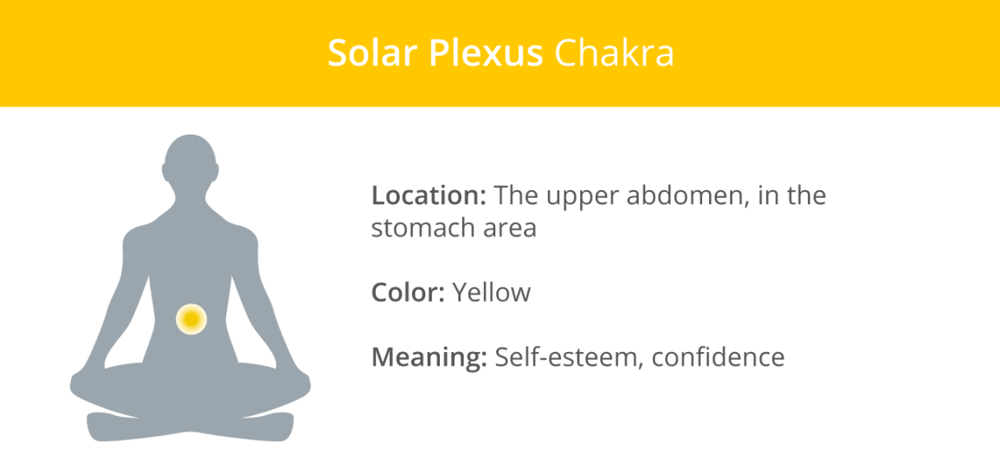
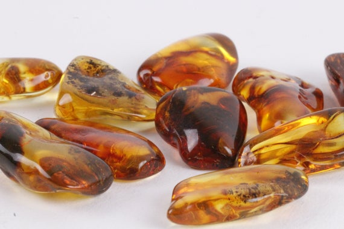
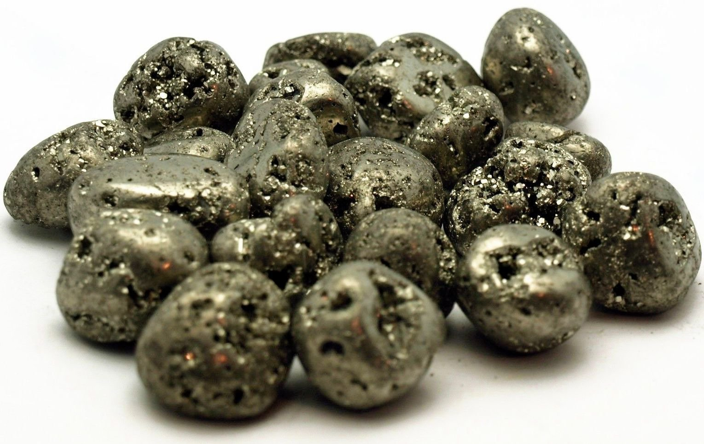
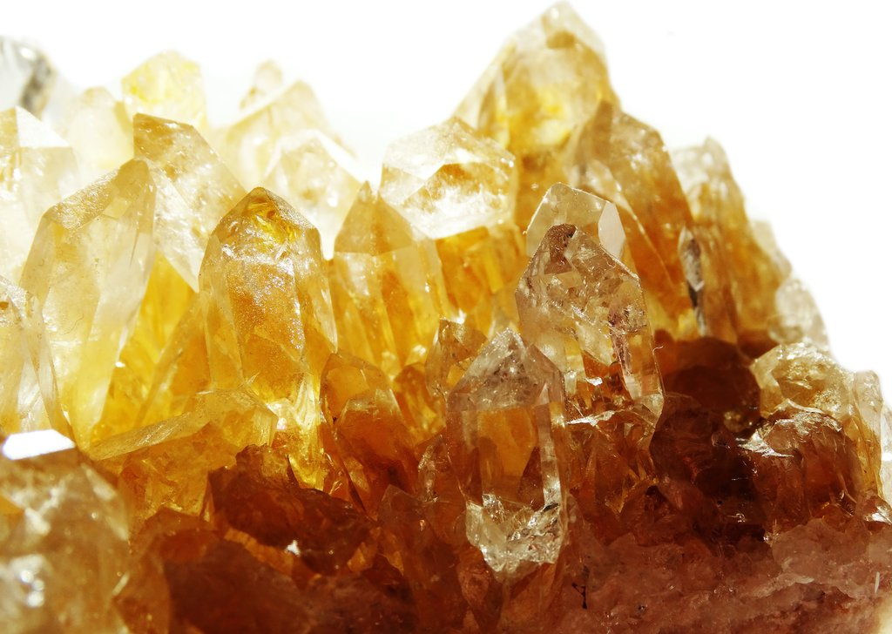

Solar Plexus Chakra

Image from https://www.healthline.com/health/fitness-exercise/7-chakras
The solar plexus chakra, located in the navel area, is associated with strength, personality, power, determination, and self-esteem.
The main colour of the solar plexus chakra is yellow:
1. Amber

Image from https://www.etsy.com/sg-en/listing/599616420/amber-tumbled-stone-average-weight-3g-4g
Assists in:
- Self-confidence
- Decision-making
- Emotional balance
- Patience
- Focus
- Clarity
- Relieving stress and anxiety
A gemstone of health and a powerful natural purifier, Amber can help to heal all body ailments associated with the solar plexus chakra.
It also enhances motivation and drive in a balanced way, and boosts confidence, optimism and well-being.
2. Pyrite

Image from https://mongolia.desertcart.com/products/45907841-apex-magnets-1-lb-iron-pyrite-tumbled-pieces-fools-gold-bulk-lot-1-pound
Assists in:
- Strength of mind
- Willpower
- Determination
- Grounding
- Protection
- Persuasion
- Communication
A stone with the appearance of a gold nugget, Pyrite strengthens our communication and persuasion skills.
It also improves comprehension, memory, learning abilities, and awareness.
3. Citrine

Image from https://consciousitems.com/blogs/crystal-guides/citrine
Assists in:
- Self-confidence
- Clarity
- Happiness and optimism
- Creativity
- Self-expression
- Manifesting desires
- Wealth and prosperity
A stone of success and happiness, Citrine motivates us to live our life with more enthusiasm, confidence, clarity, and meaning.
It also encourages us to follow our intuition and let go of the past.
[Information adapted from https://7chakrastore.com/blogs/news/chakra-stones]